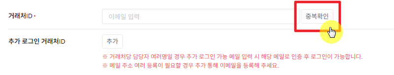

01. 거래처관리
거래처관리 화면 사용법
해외 B2B 사이트를 이용하는 거래처(해외 바이어) 계정을 등록·조회하고,
해당 거래처의 견적·주문 내역을 확인하는 화면입니다.
현재는 거래처가 이 화면에서 관리자에 의해서만 등록됩니다. 고객이 사이트에서 직접 가입하는 화면은
추후 개발 예정이며, 오픈 이후에는 고객이 이메일 기준으로 회원 가입하고
관리자가 그 회원이 어떤 거래처에 해당하는지 매칭해주는 방식으로 운영될 예정입니다.
이 페이지에서 확인할 내용
- 거래처 목록 조회
- 거래처 등록 — 거래처ID 중복확인 규칙
- 거래처 상세 화면 구성 (탭별 설명)
- 자주 하는 실수
1 거래처 목록 조회
기본은 최근 1개월 가입 거래처만 보입니다. 과거 가입 건을 찾으려면 가입일 기간을 "전체"로 바꿔 검색하세요.
| 검색어 | "거래처 번호"와 "거래처 ID / 거래처명"을 동시에 입력할 수 있으며, 두 조건을 모두 입력하면 AND 조건(둘 다 만족하는 거래처만)으로 검색됩니다. |
|---|
| 국가 | 다중 선택이 가능하며, 선택한 국가에 해당하는 거래처만 조회됩니다. |
|---|
| 상태 | 전체 / 거래중 / 거래중지 |
|---|
목록의 거래처 번호를 클릭하면 상세 화면으로 이동합니다. 신규 등록은 목록 상단의 등록 버튼을 누릅니다.
Tip. 거래처번호(회원번호)는 G1-00001과 같은 형식으로 등록 시 자동 생성되며, 관리자가 직접 입력하지 않습니다.
2 거래처 등록 — 거래처ID 중복확인 규칙
등록 전 확인. 거래처 번호가 ERP에 이미 등록된 경우에는 이 화면에서 직접 등록하지 말고,
ICT를 통해 데이터 등록을 요청해야 합니다. 반면 신규 거래처이거나 ERP에 아직 등록되지 않은 상태라면
이 화면에서 관리자가 직접 등록하면 됩니다.
거래처ID는 이메일 형식으로만 등록할 수 있고, 저장하기 전 반드시 중복확인 버튼을 눌러야 합니다.
| 이메일 형식이 아님 | "거래처 ID는 이메일만 등록 가능합니다." 안내 후 등록 불가 |
|---|
| 중복확인을 누르지 않고 저장 | "거래처 ID 중복확인 후 등록 가능합니다." 안내 후 등록 불가 |
|---|
| 중복확인 결과 — 중복 없음 | "중복된 거래처ID가 없습니다." 안내 후 등록 가능 상태로 전환 |
|---|
| 중복확인 결과 — 이미 등록된 ID | "이미 등록된 거래처 ID입니다. 이대로 등록 하시겠습니까? (거래처명: OOO)" 확인/취소 팝업 |
|---|

거래처ID를 입력한 뒤 반드시 옆의 "중복확인" 버튼을 눌러야 저장이 가능합니다.
주의. 이미 등록된 이메일이어도 확인 팝업에서 "확인"을 누르면 시스템이 막지 않고 그대로 중복 등록을 진행합니다.
동일한 바이어의 계정이 중복 생성되지 않도록, 등록 전 거래처 목록에서 먼저 검색해보는 습관을 들이는 것이 안전합니다.
참고. 거래처ID는 해당 거래처의 대표 이메일입니다. 등록 화면에는 추가 로그인 거래처ID 항목이 별도로 있어,
[추가] 버튼으로 이메일을 더 등록하면 거래처당 담당자가 여러 명이어도 각자 자신의 메일로 인증 후 로그인해
동일한 거래처 정보를 함께 조회할 수 있게 됩니다.
단, 실제 인증·로그인 동작은 front(고객) 화면 개발 시 함께 반영될 예정이며 현재는 항목만 있고 동작하지 않습니다.
그 외 등록 시 참고할 점
| 거래처 담당자 이메일 | 비워두고 저장하면 거래처ID(대표 이메일)와 동일한 값이 자동으로 채워집니다. 실제 담당자 메일과 다르다면 별도로 수정해주세요. |
|---|
| 국가 | 선택하면 거래처 연락처의 국가번호가 자동으로 채워집니다 (수정 가능). |
|---|
| 통화 | KRW/USD/EUR — 이 거래처가 로그인했을 때 사이트에서 보이는 가격·단위 표시 기준이 됩니다. |
|---|
| 영업담당자 / 영업담당부서 | 영업담당자를 선택하면 소속 부서(예: 글로벌1팀)가 자동으로 표시됩니다. |
|---|
3 거래처 상세 화면 구성
상세 화면은 기본정보 / 견적·주문내역 / 문의내역 / 변경이력 4개 탭으로 구성됩니다.
3-1. 기본정보
거래처명, 대표자명, 국가, 통화, 주소, 담당자 연락처 등 계약·서류 발행에 쓰이는 기본 정보를 관리합니다.
주의. 거래처명은 PL(포장명세서)·PI(견적송장)·CI(상업송장) 등 자동 생성 서류에 수입자 정보로 그대로 연동됩니다.
다만 변경 시점 이후에 생성되는 서류부터만 반영되므로, 이미 발행된 과거 서류는 소급 수정되지 않습니다.
3-2. 견적·주문내역
이 거래처가 진행한 견적·주문 건을 모아서 조회합니다. 견적등록 / 주문등록 버튼을 누르면 이 거래처 정보가 자동으로 연동된 채로 등록 화면이 열립니다.
주의. 반드시 대상 거래처의 상세 화면에서 견적·주문을 등록해야 합니다. 다른 거래처 상세에서 실수로 등록하면
엉뚱한 거래처 앞으로 견적·주문이 생성될 수 있습니다.
3-3. 문의내역
오픈 예정. 문의내역은 고객이 사이트에서 직접 문의를 남기는 front(고객) 화면이 개발된 이후에 사용되는 탭입니다.
front 화면이 아직 없는 현재 시점에는 고객이 문의를 남길 방법이 없어 탭에 표시되는 내용이 없는 것이 정상이며, front 오픈 시 아래 내용대로 동작할 예정입니다.
고객이 사이트에서 남긴 문의를 확인하고 답변합니다.
| 대기 | 고객이 문의를 남긴 뒤 관리자가 아직 확인하지 않은 상태 |
|---|
| 확인중 | 관리자가 상세를 한 번이라도 열어본 상태 |
|---|
| 완료 | 관리자가 답변을 등록한 상태 |
|---|
주의. 답변할 생각 없이 내용만 확인하려고 열어봐도 상태가 자동으로 "확인중"으로 바뀌고 확인일·확인자가 기록됩니다.
3-4. 변경이력
기본정보의 각 항목이 언제, 누구에 의해, 어떤 값에서 어떤 값으로 바뀌었는지 항목 단위로 기록·조회됩니다.
자주 하는 실수 체크리스트
Q. 거래처ID를 입력하고 바로 저장했는데 등록이 안 돼요.
거래처ID는 저장 전에 반드시 "중복확인" 버튼을 눌러야 합니다. 누르지 않으면 저장되지 않습니다.
Q. 담당자에게 안내 메일을 보냈는데 못 받았다고 해요.
거래처 담당자 이메일을 비워둔 채 저장하면 대표 거래처ID와 동일한 주소로 자동 설정됩니다. 실제 담당자 메일 주소로 다시 수정해주세요.
Q. 거래처명을 수정했는데 예전 주문 서류는 왜 그대로인가요?
거래처명 변경은 이후 새로 생성되는 서류부터 반영됩니다. 이미 발행된 PI/CI/PL은 소급 변경되지 않습니다.
Q. 문의를 열어만 봤는데 "확인중"으로 바뀌었어요.
정상 동작입니다. 문의 상세를 한 번이라도 열면 자동으로 "확인중" 상태가 되고 확인일·확인자가 기록됩니다.